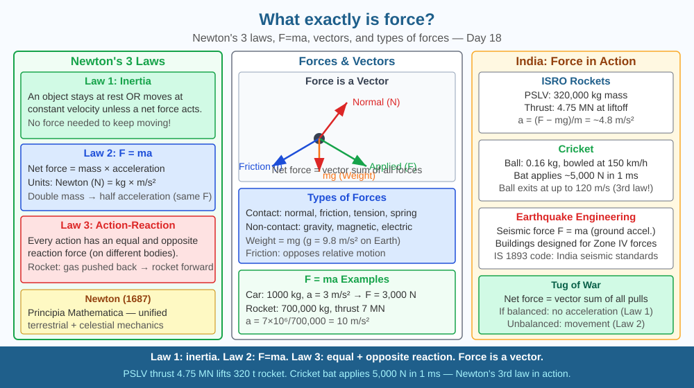

By the end of this lesson, you should be able to define force scientifically, describe Newton's three laws of motion, and predict what happens when two equal forces act in opposite directions.
You push a book across a table. It slides, slows, and stops. Why does it stop — what's removing the force you applied? And if you kick a ball in space with no air, will it ever stop?
Force: A push or pull that changes an object's state of motion, shape, or speed. Vector quantity (has magnitude AND direction). Unit: Newton (N) = kg·m/s².
Newton's First Law (Law of Inertia): An object at rest stays at rest, and an object in motion stays in motion with the same speed and direction, UNLESS acted upon by a net external force. Friction is the external force that stops the sliding book. In space, with no friction, the ball moves forever.
Newton's Second Law: F = ma. Net force = mass × acceleration. Double the force → double the acceleration. Double the mass → halve the acceleration (same force). This is the most powerful equation in classical mechanics.
Newton's Third Law: Every action force has an equal and opposite reaction force. Rocket propels gas backward → gas pushes rocket forward. You push Earth down with your weight → Earth pushes you up with normal force.
Types of forces: - Contact: friction, normal, tension, compression - Non-contact: gravity, electrostatic, magnetic
Net force: Vector sum of all forces. If net force = 0 → equilibrium (no acceleration).
Think of Newton's three laws as the rulebook for every motion problem you will ever encounter:
The SVG shows three horizontal panels, one for each of Newton's laws.
The top panel illustrates the First Law: a book on a table with opposing "friction" and "applied force" arrows; below it, the same book in outer space with a single "kick applied" arrow and the label "continues forever — no net force."
The middle panel shows the Second Law: identical 10 N forces applied to a 1 kg block ("a = 10 m/s²") and a 2 kg block ("a = 5 m/s²"), with F = ma displayed between them.
The bottom panel illustrates the Third Law: a rocket with a rightward thrust arrow and an equal leftward arrow on the exhaust gases; alongside it, a swimmer pushing a wall with equal and opposite reaction forces labelled "different objects — forces do not cancel."

ISRO's rocket launches use F = ma to calculate every burn precisely. The GSLV-Mk III (renamed LVM3) that launched Chandrayaan-3 produced 3,826 kN of thrust to accelerate the 640-tonne vehicle off the launchpad — every kilogram of payload required engineers to calculate exactly how much fuel was needed to produce the necessary acceleration against Earth's gravity.
Every bridge in India — there are approximately 1.5 lakh bridges — uses force analysis: tension in cables, compression in pillars, and shear at joints are all calculated using Newton's Second Law. India's road transport sector (90 million vehicles) applies Newton's laws to set braking distance standards: the stopping distance of a vehicle depends on its mass (inertia), the braking force available, and the friction coefficient of the road surface — all three linked directly by F = ma.
Seat-belt physics: sit in a moving vehicle or imagine sitting in one. When the vehicle brakes suddenly, your body continues forward (Newton's First Law — your body has inertia and no braking force is directly applied to it yet).
The seat belt applies a backward force to your chest, decelerating you with the car over roughly 200 milliseconds. Without a seat belt, your body's inertia carries it forward at the car's previous speed until it hits the windscreen — a distance of about 50 cm, covered in 5 milliseconds, resulting in a peak force many times greater than with a belt.
Estimate: if a car decelerates from 60 km/h to rest in 3 seconds, calculate the force on a 60 kg passenger using F = ma. Convert 60 km/h to m/s first. This single calculation explains why seat belts save lives.
Newton's laws break down in two regimes. Near the speed of light, special relativity replaces F = ma with F = d(mv)/dt — mass increases with velocity, making c unreachable. At atomic scales, quantum mechanics applies: particles lack definite trajectories, and forces are mediated by particle exchange (photons for electromagnetism, gluons for the strong force).
For everyday scales — 1 mm to 1,000 km, speeds below ~10 % of c — Newton's laws are extraordinarily accurate. The New Horizons probe, launched 2006, flew past Pluto in 2015 within 72 seconds of its predicted arrival — calculated using Newtonian mechanics alone.
Predict: A rocket in deep space with no gravitational forces nearby fires its engine for 10 seconds at constant thrust, then cuts the engine. Using Newton's First and Second Laws, describe the rocket's motion during the burn and after the engine cuts. What would an astronaut inside feel during each phase?
What is the correct scientific definition of force?
Correct answer: B
Why is understanding how force produces change more useful than just defining force?
Correct answer: B
If two equal forces acted on an object from opposite directions, what would you predict?
Correct answer: A
A 1,000 kg car is travelling at 20 m/s. The driver applies brakes that provide a constant friction force of 5,000 N.
Calculate: (a) the deceleration of the car using F = ma, (b) the time taken to stop completely, (c) the distance covered during braking using v² = u² + 2as. Then explain using Newton's Third Law what force the road surface experiences during braking, and predict what would happen to the stopping distance if the car were loaded with an additional 500 kg of cargo while the braking force stayed the same.
Newton's Third Law means that you gravitationally attract the Earth with exactly the same force that Earth attracts you. When you jump, you push Earth downward. Earth actually moves toward you — but because Earth has a mass of 6 × 10²⁴ kg, its resulting acceleration is so small (roughly 10⁻²³ m/s²) that it is undetectable by any instrument ever built. In principle, every person who has ever jumped has moved Earth — a tiny, immeasurable, permanent shift in its position. The universe keeps an exact ledger.
Force is a vector push or pull that changes motion according to F = ma — and every force exists only as one half of an action-reaction pair acting on two different objects, never alone.